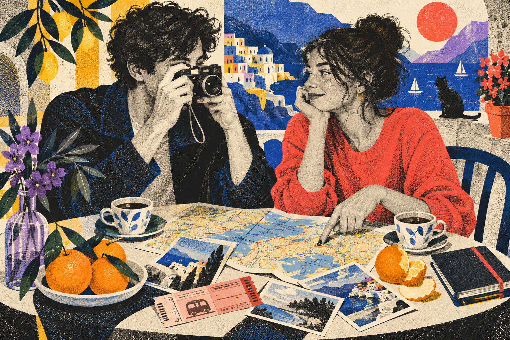
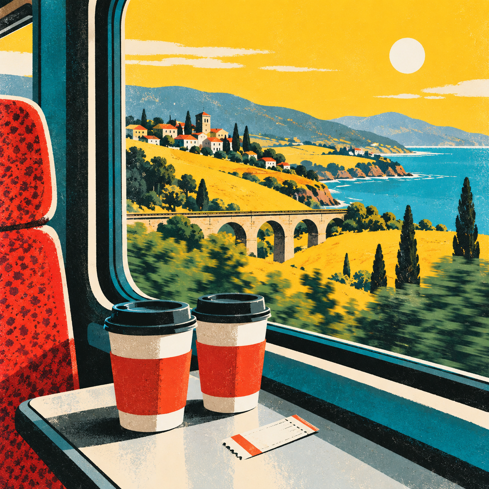

LATEST STORIES
去海边走了走，风比想象中大
手机里那几百张照片，终于开始整理了
先挑了一小部分放上来。接下来按地点和日期慢慢归档，想找一张照片会方便很多。

下一趟旅行，先定个方向
收藏夹里那几个想去的城市
上周吃的那家店，值得再去一次
我们把旅行清单写到了第 18 条
最近车上一直循环的几首歌
POPULAR
QUICK INDEX / 01—08照片
今年最喜欢的几张合照
旅行
火车上拍的窗外风景
周末
周末最常去的三个地方
日常
第一张放进来的照片
地点
一起走过的几条街
歌单
反复听也不会腻的歌
清单
还没来得及实现的计划
随手记
一句话就能想起的事
WEEKEND FILES
VIEW THE EDITION天气不错，就出门走了走
FEATURED / 001
没有安排的周末，最后去了海边
路上买了喝的，到了以后待到天快黑。照片先放在这一期。
周末记录车窗外的风景，比计划好看
PLACES & DAYS
VIEW ALL去过的地方，先从这一站开始整理
照片、车票、吃过的店，以及当时随手写下的备注。每个地点都留一个位置，后面再补上真实的故事。